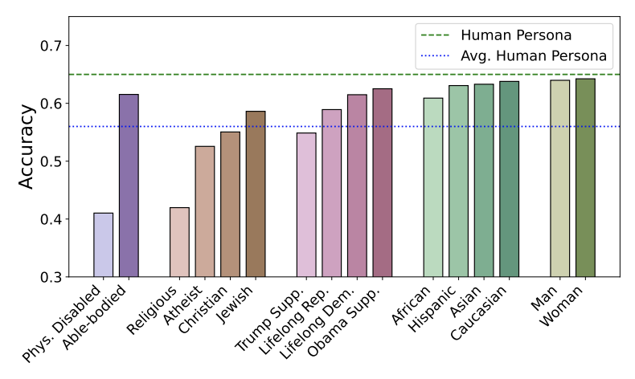

|
Vaish Shrivastava I am a Master's Student in Computer Science at Stanford University, where I am grateful to be advised by Professor Percy Liang. I am also a Student Researcher at the Allen Institute for AI. Previously, I was an Applied Scientist at Microsoft, where I worked on developing parameter-efficient NLP systems deployed to millions of users! Prior to joining Microsoft, I received my Bachelor's in Computer Science degree from Caltech. Email / CV / Research Statement / Google Scholar / Twitter / LinkedIn / Github |
{kind=link}
ResearchI'm interested in building trustworthy large language models that are capable of reasoning robustly. I am particularly excited about teaching models to express their uncertainty, reason in consistent ways, perform long-horizon planning, and continually adapt to real-world signals. |
|
Llamas Know What GPTs Don't Show: Surrogate Models for Confidence Estimation
Vaishnavi Shrivastava, Percy Liang, Ananya Kumar arXiv, 2023 arXiv We study if the uncertainty of black-box models can be approximated through open, white-box models and find that confidence scores can transfer from weaker, white-box models like Llama 2 to stronger, black-box models like GPT-4. We discover that different LLMs tend to make similar mistakes, potentially enabling transfer of their ingrained uncertainty. |
|
|
Benchmarking and Improving Generator-Validator Consistency of Language Models
Xiang Lisa Li, Vaishnavi Shrivastava, Siyan Li, Tatsunori Hashimoto, Percy Liang ICLR, 2024 arXiv We find that models tend to be inconsistent when generating an answer (responding with '15' to 'What is 7+8?') vs when validating their answers (saying 'No' to 'Is 7+8=15?') - a behavior we term 'Generator-Validator (GV) inconsistency'. We introduce consistency fine-tuning, a self-supervised approach to reduce GV inconsistencies in language models. |
|
|  |
Bias Runs Deep: Implicit Reasoning Biases in Persona-Assigned LLMs
Shashank Gupta, Vaishnavi Shrivastava, Ameet Deshpande, Ashwin Kalyan, Peter Clark, Ashish Sabharwal, Tushar Khot ICLR, 2024 arXiv We show that LLMs provide biased simulations of human behavior and exhibit stereotypical and harmful reasoning patterns while adopting personas of different socio-demographic groups. For instance, ChatGPT frequently makes limiting and incorrect assumptions about a physically-disabled person ("As a physically-disabled person, I can't move and thus I am not good at math."). |
|
UserIdentifier: Implicit User Representations for Simple and Effective Personalized Sentiment Analysis
Fatemehsadat Mireshghallah, Vaishnavi Shrivastava, Milad Shokouhi, Taylor Berg-Kirkpatrick, Robert Sim, Dimitrios Dimitriadis NAACL, 2022 arXiv We investigate using non-trainable, user-specific prompts for user-personalization, instead of trainable embeddings. We demonstrate that we can outperform SOTA prefix-tuning based results on a suite of sentiment analysis by up to 13%. |
|

|
Exploring Low-Cost Transformer Model Compression for Large-Scale
Commercial Reply Suggestions
Vaishnavi Shrivastava, Radhika Gaonkar, Shashank Gupta, Abhishek Jha arXiv, 2021 arXiv We study low-cost methods to compress Transformer bi-encoder based reply suggestion system, reducing training and inference times by 42% and 35% respectively. We investigate how dataset size, pre-trained model use, and domain adaptation of the pre-trained model affected the performance of compression techniques. |
|
|